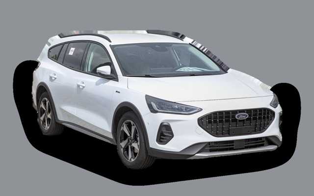
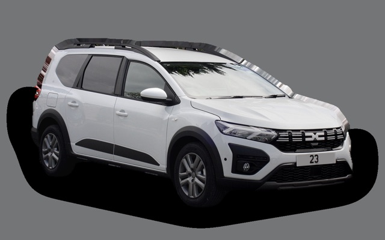

What does a Seat Leon Sportstourer cost per month?
A 2023 Seat Leon Sportstourer costs about SEK 3,376 a month, all in.
SEK 3,376per month, 2023 model
SEK 182,000price, 2023 model
SEK 278,900new from
Bvalue grade (2023)
Monthly cost by model year
| Model year | Version in the calculation | Price | Per month | Grade |
|---|---|---|---|---|
| 2026 | 1.5 TSI 115 manuell, Style | SEK 278,900 | SEK 4,585 | C |
| 2023 | 1.5 TSI 115 manuell, Style | SEK 182,000 | SEK 3,376 | B |
| 2020 | 1.5 TSI 115 manuell, Style | SEK 131,000 | SEK 3,030 | B |
Based on 5 years of ownership and 12,500 km a year, with fuel prices from 2026-10-22. The monthly cost includes depreciation, fuel, servicing and repairs, insurance and road tax.
How the cost splits for a 2023 car
- Depreciation: SEK 1,218/mo
- Fuel: SEK 1,207/mo
- Servicing and repairs: SEK 532/mo
- Insurance: SEK 355/mo
- Road tax: SEK 65/mo
Used prices in ads
| Model year | Median price | Ads | Typical mileage |
|---|---|---|---|
| 2026 | SEK 249,400 | 4 | 8,000 km |
| 2025 | SEK 234,900 | 43 | 26,000 km |
| 2024 | SEK 219,900 | 17 | 37,000 km |
| 2023 | SEK 218,900 | 4 | 39,000 km |
| 2022 | SEK 189,700 | 6 | 67,000 km |
| 2021 | SEK 199,400 | 18 | 96,000 km |
| 2020 | SEK 158,400 | 10 | 93,000 km |
The median price in Swedish ads by model year in October 2026 (source: Blocket, AutoUncle). Ad prices are asking prices, and the final price may be lower.
Engines and versions
| Engine | Fuel | Power | 0–100 km/h | Consumption (WLTP) | Range | Model years | Extra cost |
|---|---|---|---|---|---|---|---|
| 1.5 TSI 115 manuell | Petrol | 115 hp | 10.6 s | 5.6 l/100 km | – | 2020– | – |
| 1.5 eTSI 115 DSG | Petrol | 115 hp | 10.6 s | 5.4 l/100 km | – | 2020– | +SEK 32,000 |
| 2.0 TDI 150 DSG | Diesel | 150 hp | 8.9 s | 4.6 l/100 km | – | 2020– | +SEK 100,000 |
| e-Hybrid 204 | Plug-in hybrid | 204 hp | 7.7 s | 1 l/100 km + 15 kWh/100 km | – | 2020– | +SEK 135,000 |
- Trim: Style
Facts
- Body
- Estate
- Model years
- 2020–
- New from
- SEK 278,900
- Boot
- 620 litres
- Euro NCAP
- 5 of 5 stars
- New-car warranty
- 3 years
- Reliability
- 3.5 of 5
- Comprehensive insurance, estimate
- SEK 5,700/yr
- Servicing, estimate
- SEK 3,800/yr
Common faults to watch for
- DSG gearbox DQ200 (mechatronics, clutch), repair about SEK 20,000
- Leaking plastic water pump and thermostat housing, repair about SEK 6,500
- EGR and particulate filter (TDI), repair about SEK 9,000
- Haldex pump (AWD), repair about SEK 7,000
- DSG gearbox (mechatronics), repair about SEK 18,000
The faults apply to some engines and model years. The calculator works out the risk for the exact version you choose.
Pros and cons
Pro
Same technology as the Golf Estate but cheaper.
Con
Harder plastics and weaker resale value than the Golf.
Similar cars
 Kia Ceed SWSEK 3,360/mo as a 2023 model
Kia Ceed SWSEK 3,360/mo as a 2023 model Volvo V70SEK 3,457/mo as a 2013 model
Volvo V70SEK 3,457/mo as a 2013 model Saab 9-3 SportCombiSEK 3,462/mo as a 2008 model
Saab 9-3 SportCombiSEK 3,462/mo as a 2008 model
Ford Focus EstateSEK 3,482/mo as a 2022 model Skoda Octavia EstateSEK 3,517/mo as a 2023 model
Skoda Octavia EstateSEK 3,517/mo as a 2023 model
Dacia JoggerSEK 3,210/mo as a 2023 model
Updated 2026-10-27 · ad data Oct 2026